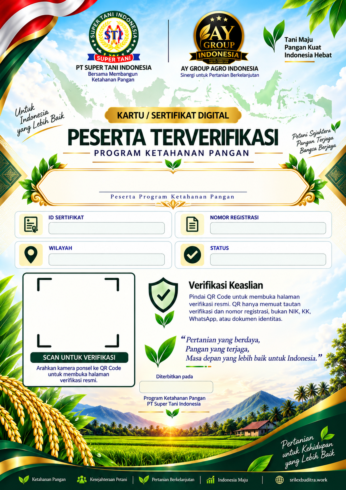

PROGRAM KETAHANAN PANGAN
Kartu / Sertifikat Digital
Menyiapkan sertifikat…Sistem sedang memastikan status peserta melalui layanan verifikasi resmi.Sertifikat tidak tersediaNomor registrasi tidak ditemukan atau peserta belum terverifikasi.Kembali ke halaman verifikasi
Sertifikat peserta terverifikasiQR Code mengarah ke halaman verifikasi publik resmi.

-
-
-
-
✓ Terverifikasi
-
🔒 Halaman sertifikat publik tidak menampilkan NIK, nomor KK, WhatsApp, email, atau dokumen identitas peserta.